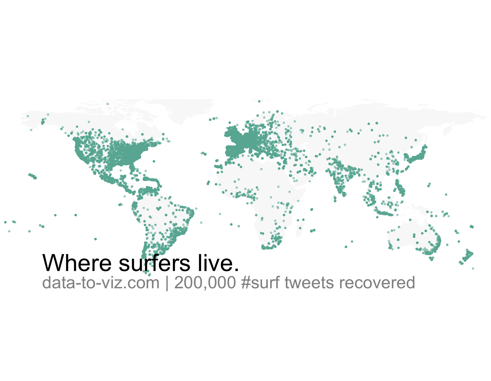
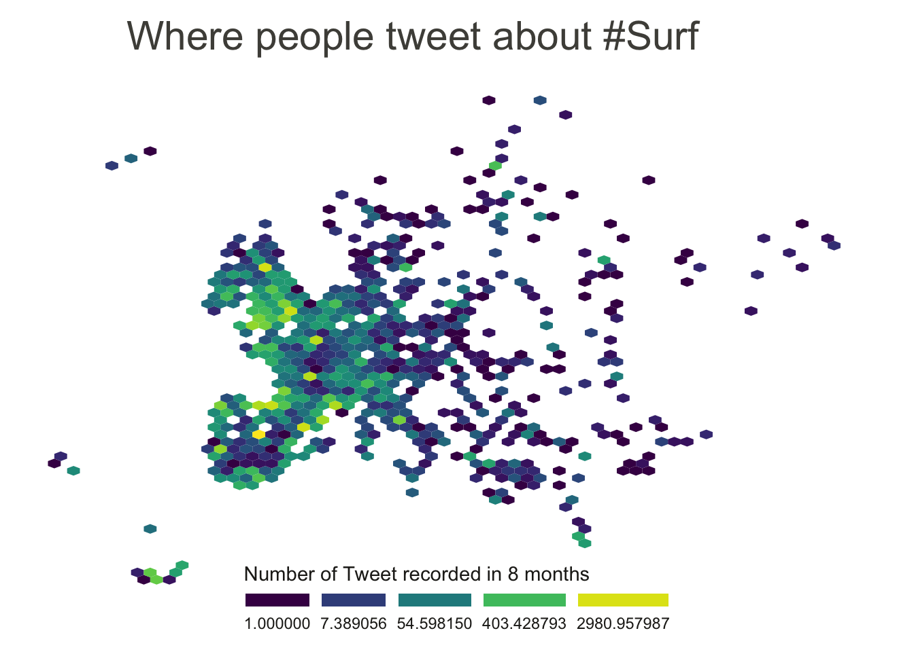

Visualizing a set of geographic coordinates
A few data analytics ideas from
Data-to-Viz.com


This document gives a few suggestions to analyse a
dataset composed by a list of GPS coordinates
It considers the
geographic position of about 200k tweets containing the hashtags
#surf, #windsurf or
#kitesurf.
This dataset has been built harvesting
twitter every day during about 300 days. It is fully available in this
Github
repository. Basically it looks like the table beside.
# Libraries
library(tidyverse)
library(viridis)
library(hrbrthemes)
library(kableExtra)
options(knitr.table.format = "html")
library(mapdata)
# Load dataset from github
#data <- read.table("https://raw.githubusercontent.com/holtzy/data_to_viz/master/Example_dataset/17_ListGPSCoordinates.csv", sep=",", header=T)
data <- read.table("../Example_dataset/17_ListGPSCoordinates.csv", sep=",", header=T)
# show data
data %>% head(3) %>% kable() %>%
kable_styling(bootstrap_options = "striped", full_width = F)| homelat | homelon | homecontinent |
|---|---|---|
| 18.28548 | -70.33012 | South America |
| 39.10312 | -84.51202 | North America |
| 19.41095 | -99.27186 | South America |
If your dataset is composed by a few data point only, you can just display them on a map. If you have specific information to display concerning these positions, use an interactive: more information are available when you click data points.
A dot density map is used when the sample size of your dataset is high.
# Get the world polygon
world <- map_data("world")
data %>%
#head(1000) %>%
ggplot( aes(x=homelon, y=homelat)) +
geom_polygon(data = world, aes(x=long, y = lat, group = group), fill="grey", alpha=0.1) +
geom_point(size=0.8, color="#69b3a2", alpha=0.5) +
coord_equal() +
theme_void() +
theme(
panel.spacing=unit(c(0,0,0,0), "null"),
plot.margin=grid::unit(c(0,0,0,0), "cm"),
) +
ggplot2::annotate("text", x = -150, y = -45, hjust = 0, size = 11, label = paste("Where surfers live."), color = "Black") +
ggplot2::annotate("text", x = -150, y = -60, hjust = 0, size = 8, label = paste("data-to-viz.com | 200,000 #surf tweets recovered"), color = "black", alpha = 0.5) +
xlim(-180,180) +
ylim(-60,80) +
scale_x_continuous(expand = c(0.006, 0.006)) +
coord_equal() 

Dotmaps give a good idea about where samples are distributed. However, once dots start to overlap, it gets impossible to distinguish how many of them are displayed on a certain zone. That’s where binning becomes an interesting option.
To create a hexbin map, the territory is divided in many hexagones and the number of sample per hexagone is counted and represented by a color.
data %>%
filter(homecontinent=='Europe') %>%
ggplot( aes(x=homelon, y=homelat)) +
geom_hex(bins=65) +
theme_void() +
xlim(-30, 70) +
ylim(24, 72) +
scale_fill_viridis(
trans = "log",
name="Number of Tweet recorded in 8 months",
guide = guide_legend( keyheight = unit(3, units = "mm"), keywidth=unit(12, units = "mm"), label.position = "bottom", title.position = 'top', nrow=1)
) +
ggtitle( "Where people tweet about #Surf" ) +
theme(
legend.position = c(0.5, 0.09),
text = element_text(color = "#22211d"),
#plot.background = element_rect(fill = "#f5f5f2", color = NA),
#panel.background = element_rect(fill = "#f5f5f2", color = NA),
#legend.background = element_rect(fill = "#f5f5f2", color = NA),
plot.title = element_text(size= 22, hjust=0.1, color = "#4e4d47", margin = margin(b = -0.1, t = 0.4, l = 2, unit = "cm")),
)
# Make the hexbin map with the geom_hex function
ggplot(data, aes(x=homelon, y=homelat)) +
geom_polygon(data = world, aes(x=long, y = lat, group = group), fill="grey", alpha=0.3) +
geom_bin2d(bins=120) +
theme_void() +
scale_fill_viridis(
trans = "log",
name="Number of Tweets",
guide = guide_legend( keyheight = unit(3, units = "mm"), keywidth=unit(12, units = "mm"), label.position = "bottom", title.position = 'top', nrow=1)
) +
theme(
legend.position = c(0.5, 0.09),
) +
ylim(-70, 80)
It is also possible to divide your territory (the world here) in regions other than square or hexagones. This will result in a chloropleth map. Of course, you need the information of the exact shape of your regions.
You can learn more about each type of graphic presented in this story in the dedicated sections. Click the icon below:
Data To Viz is a comprehensive classification of chart types organized by data input format. Get a high-resolution version of our decision tree delivered to your inbox now!

A work by Yan Holtz for data-to-viz.com